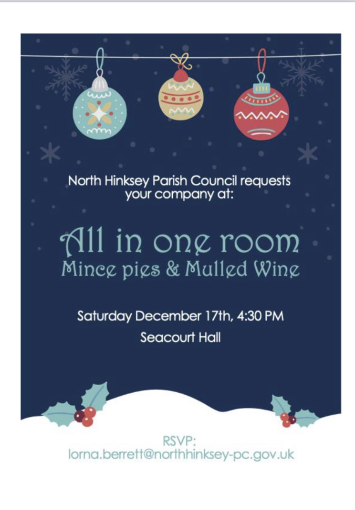
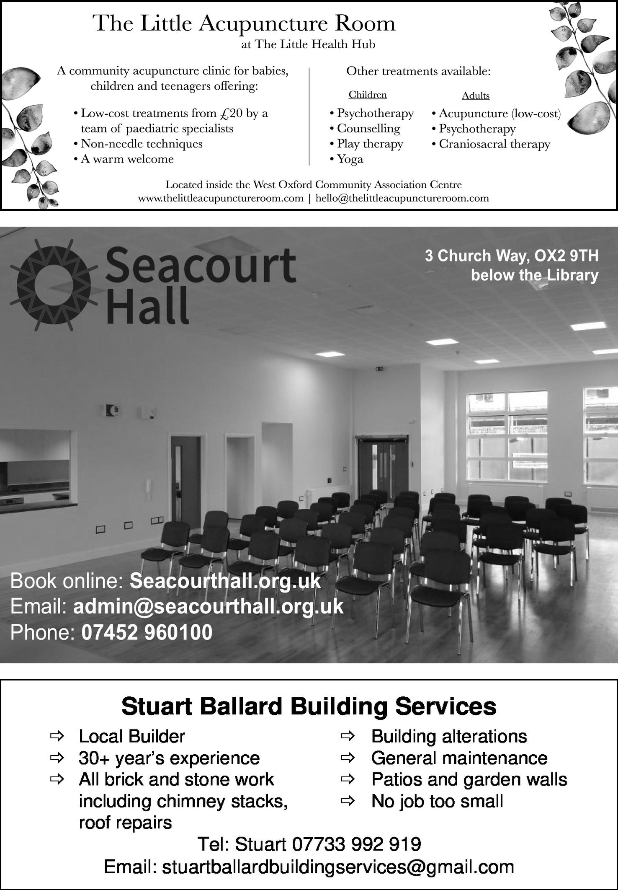
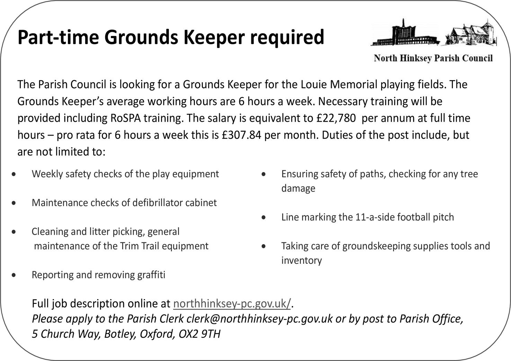
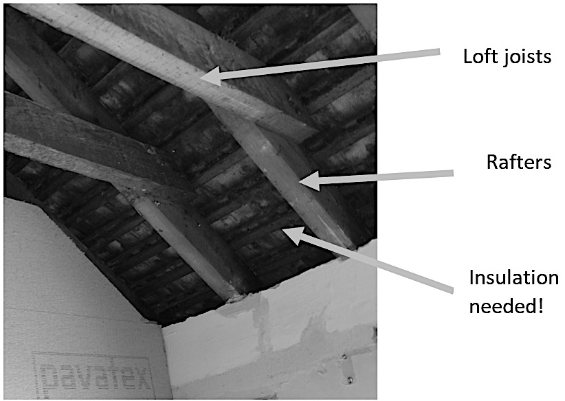
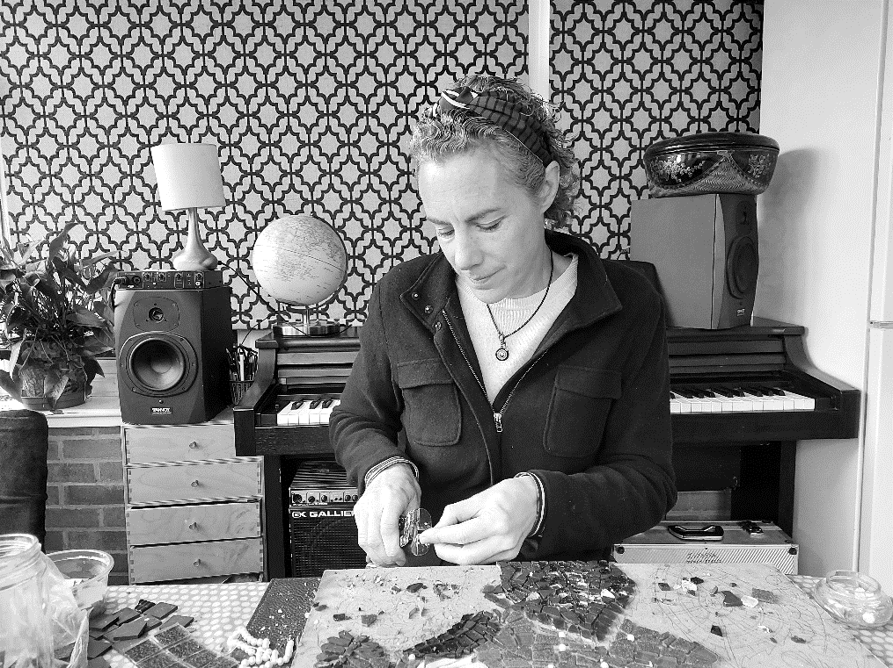
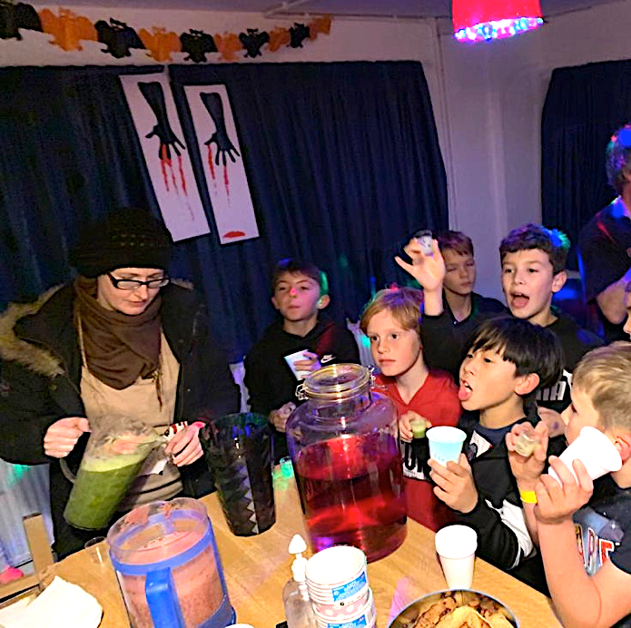
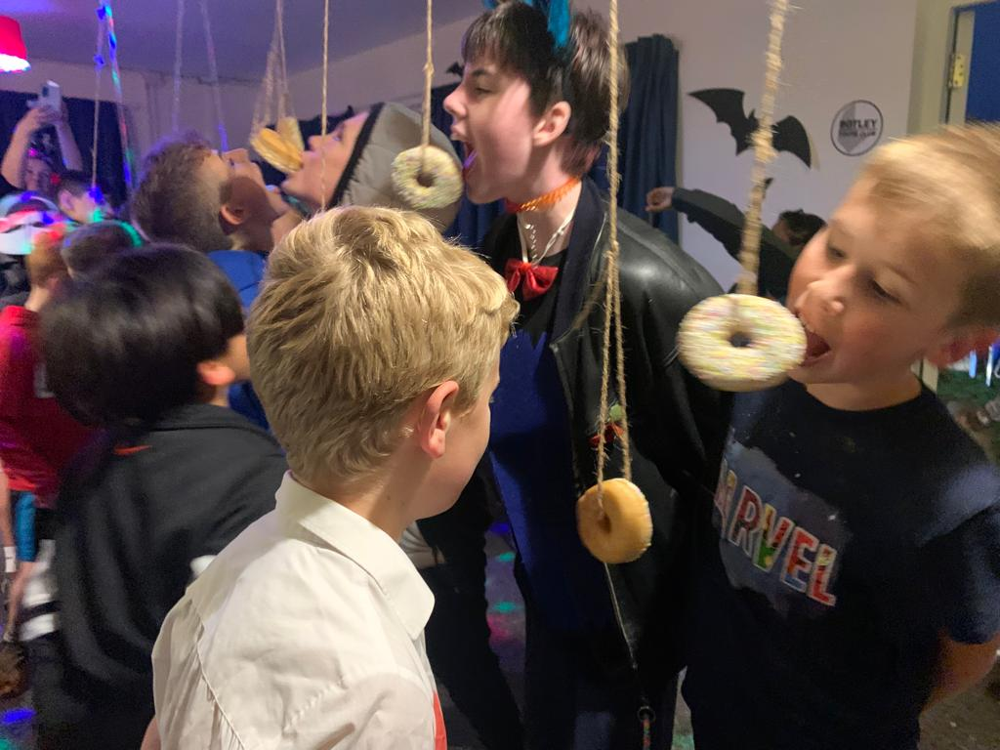

The Sprout
Decorated bike at West Oxford Light Festival
The Newsletter for North Hinksey & Botley
Issue 173 December 2022
The Sprout
Issue 173, December 2022
Contents
3 All in One Room
5 Christmas Hampers
6 Skatepark
7 We Will Remember Them
11 Calling the Money Family
13 Botley School
17 B & K Medical Centre
19 Public Art Open Day!
21 Home Energy Assessments |
23 Home Energy Advice
25 Making Mosaics
27 Haikus
29 Progress at the Precinct
33 Botley Youth Club is Back
35 Vale News
36 Kennington Memory Club
37 Randoms
39 Local Organizations |
From the Editor
The Season of Good Will is making itself felt in Botley. The parish council have invited everyone they can think of who volunteers locally to a party on 17th December (p3). It’s the first time there’s been something like this since the Best of Botley, five years ago. Could this be the start of something big? How about going the whole hog next year, and having a Volunteers Fancy-dress Ball? Botley Bridges, too, is looking for help with their annual Christmas Hampers (p5) for local families feeling the pinch. Everyone must be feeling the rising costs of energy, but there’s help at hand from Sustainable Botley (pp21-3). Good news for our young people too: Botley Youth Club is starting up again (p33), and the long-awaited Botley Bowl Skatepark has reached the end of the design phase (p6) and been accepted by the parish council. Now to raise the money! Kennington Memory Club continues to offer help to people with dementia and their carers (p36), and we have reprised Kevin Smith’s thought-provoking address from the Remembrance Sunday service last month (p7). Does anyone know the Money family (see p11)? Please get in touch if you do. On the cultural front, there are haikus on page 27, a master-mosaicist on page 25, and a Public Art Open Day on page 19. All this and more in the December Sprout. We wish all our readers Happy Christmas. The next issue will be in February 2023.
Ag MacKeith
All in One Room
The Parish Council is getting into the Christmas Spirit by setting up what could be a huge party for the hundreds of volunteers who all do something to make this a happy community. On Saturday 17th December there will be mulled wine and mince pies (and cups of tea, no doubt) in the Seacourt Hall at 4.30pm. Why are they doing this? Here’s how Cllr Laura Jones sees it: “The main aim for this reunion is to have volunteers from our community all together in one room, so they can get to know each other, see other people’s work, share experiences, needs and ideas. During these trying times it is good to see that so many people are giving their time in order for the community to have some services, places to go, facilities. Might also be a good opportunity to share some of the frustrations that being a volunteer brings sometimes. Just putting the list together and seeing the hundreds of people in our community who spend their free time for the common good is uplifting in itself. All is not lost, there are many (Many!) in our local community who want to make Botley a better place.”
So far, 45 different organizations have been approached – the Sprout, for instance, has about 35 willing helpers, there are around 50 Botley Responders, 43 PPG members, 19 Friends of Botley School, etc, etc, and of course many people will be on more than one list. If you know anyone who ought to be asked, please get in touch with
Lorna.berrett@northhinksey-pc.gov.uk
Letters
Having recently been the beneficiary of outstandingly good neighbour-liness, I wondered whether The Sprout in the past (or even present, and I haven't noticed) has done anything specific to encourage the good dimension. I'm thinking of maybe a monthly certificate based on Sprout readers nominating people, or even a small annual trophy of some sort.
Alison le Cornu Why don’t you get in touch with Lorna, Alison, and ask for an invite for your neighbour? We could discuss it at the party. Ed
Christmas Hampers for local families on low income
Botley Bridges Family Support and local food charities are again working together to spread some Christmas cheer to local families in Cumnor, Botley and West Oxford. Last year we distributed over 100 hampers, brimming with a variety of food and gifts, all donated, packed and delivered by local volunteers.
With the continuing pressure on family incomes and rising prices, many families find Christmas a difficult time. We are looking to our local community to spread some Christmas cheer. Can you donate? Here is what we need:
Tea/Coffee/Hot Chocolate/Squash/Soft Drinks (no alcohol please)
Fresh fruit or veg
Christmas treats
Jars of Jam / Marmalade / Honey / Syrups
Tins of Fruit / Tuna / Baked Beans / Pasta Sauces / Soup
Bread / Crackers / Oats / Breakfast Cereals / Rice / Pasta
We are also hoping to include some small (stocking filler) gifts in the hampers. (Please leave these unwrapped so we can best match them to the recipients.)
For Adults: Toiletries / warm socks / blankets / hot water bottles
For Children: Bubbles / craft or construction sets / activity books
Books (for a variety of ages)
Cards / card games
Toiletries
Drop off donations at St Peter and St Pauls Church Hall, on Wednesday 21st December, between 9am and 6pm. If not possible email secretary@botleybridges.org to arrange an alternative venue and time. If you could volunteer to take in deliveries, pack hampers or deliver, please contact me on the email above, or phone me on 07760 166055.
To request a hamper for a household on a low income, use the form on https://botleyhampers22.web.app/ or download a form from the Botley Bridges website and e-mail it to secretary@botleybridges.org Or you can pick up a form from your school or pre-school, and hand it in there.
Thank you! Sarah Cohen, Secretary, Botley Bridges
Skatepark
The final design has been agreed, after several months of impassioned discussion. We had started with the idea that we needed a bowl, as a nod to the famous original Botley Bowl, but we also needed a mini-ramp (seen on the right, like a half pipe, but only about 60cm high) as there aren’t any low ramps in the local parks. A bit of Street (i.e., flat) with kerbs plus a flat wide pavement (aka manny-pad) which lowly beginners could get up to speed on, and some concrete billows, perceived as the future of skateparks, as we wanted to be ahead of the game. There was also the budget to take into account – £180,000. It seems like a lot of money, but it is nowhere near the top end of the market. Here is the design that was welcomed by the Parish Council on the evening of 24th November.
What next? Now Canvas need to bring the planning application to the December council meeting for agreement, so we can put it in to the Vale. Meanwhile, a fund-raising strategy is being devised. We already have some good ideas and some offers of help, but if you would like to be part of the fun, and have any fundraising expertise, or access to corporations that like to give grants to worthy causes that keep teenagers out of trouble, please do get in touch via The Sprout.
Ag MacKeith
We Will Remember Them
The annual Remembrance Sunday service run by the Parish Council in the Commonwealth War Graves in Botley Cemetery took place this year on 13th November. It is always heart-warming to see how inclusive it is, with input from all the major faiths, and from old and young alike. It is always very well attended, too, and the address, which varies every year, always leaves you with something to think about. This year the address was given by Kevin Smith, and he chose to direct our attention to that word: Remembrance.
“We stand here among over 700 war graves, mostly not locals but people from all over the world. And we know that there are many other cemeteries like this around the world. Most of the people buried in them were not special. They won’t appear in any history books. They were ordinary men like your brother, your son, your father, a neighbour, or the shop assistant who served you your groceries each week. How can we remember so many?
I have been researching the 23 men and boys of North Hinksey and Botley who were killed in the two world wars. I’d like to tell you the story of one of them: William Ezra White.
William was born on 3rd February 1889 in Oxford, the son of William and Mary Ann White, and he grew up right here in this cemetery. In 1901 he was living with his parents at the Cemetery Lodge, where his father was the Cemetery Superintendent for 28 years. He was the second youngest in a family of three boys and four girls. It must have been a crowded household. As a young boy perhaps he played football in the grounds when he thought no-one was looking, or maybe he climbed some of the trees. I’m sure I would have!
But William grew up. By 1911 he was a grocer’s assistant still living with his parents at the Cemetery Lodge. He was still a grocer’s assistant when he married Grace Barson on 25th August 1913, at Saint Lawrence’s Church, North Hinksey.
William enrolled in the Royal Navy Volunteer Reserve on 6th September 1916 (aged 27), when he was described as 5 feet 8¾ inches high (that’s 1.75m for the younger members of the audience) with brown hair, blue eyes, and a fresh complexion. After some months’ training, he joined the crew of the Royal Fleet Auxiliary Lady Cory-Wright on 4th August 1917. The RFA Lady Cory-Wright was a cargo steamship requisitioned by the Admiralty in August 1914 as a Mine Carrier. On 26th March 1918 she left Plymouth for Malta with a cargo of depth
charges, mines, and other explosives. Later that same day she was torpedoed and sunk by the German submarine UC-17 as she left the English Channel. All her forty crew were killed.
William is commemorated on the Chatham Naval Memorial, Kent; on the Abingdon War Memorial; and in St. Lawrence's church, North Hinksey.
Sadly this was not the only loss for the extended family. His wife’s cousin Private Thomas Frederick Barson died in March 1917 and is buried in Botley cemetery. And later, in the Second World War, Thomas’s nephew, Private William John Barson (of North Hinksey Village), died in November 1942 of dysentery and beriberi in a Japanese Prisoner of War camp. He is buried in Malaysia.
So we return to my question: how can we remember so many? Perhaps after today’s service, you might wander among the gravestones, pick one at random, and search for his name and service number. If you’re lucky you will find a sentence or two about him. The local library offers online access to other resources that you can use to find out more about his family history. You will all know the line we recite every year at this service: We will remember them. Here is one way that we can.”
Kevin’s address struck a particular chord with me, because the deeds to my house include some from 1896 when Thomas Barson was living there in Old Botley with his wife Priscilla and his family. I asked Kevin what relation Alice or Thomas might have been, and he got back to say:
 Thomas Frederick Barson married Emily Flora Amanda Kitchen of 4 Old Botley in 1914. [4 Old Botley is the first house from the top of North Hinksey Lane after RABI headquarters]
Thomas Frederick Barson married Emily Flora Amanda Kitchen of 4 Old Botley in 1914. [4 Old Botley is the first house from the top of North Hinksey Lane after RABI headquarters]
William George Barson was the son of Matthew and Harriet Barson of Home Lea, Old Botley, and was born in December 1898.
In 1939, Benjamin and Nellie, parents of William James Barson, (died at sea in the Far East in 1943), were at 5 Old Botley (opposite No 4).
Thanks, Kevin, for opening a window on a little part of local history. It did make me go back and search out Tom Barson’s grave. Barson was such a common name in Old Botley. Are any of his relations still living in the parish? If you’d like to know more about ‘The War Dead of North Hinksey’ that’s the title of Kevin’s book, and you can buy it on Amazon. Ag MacKeith

Calling the Money Family
I am currently researching and writing a book about my late father’s WW2 war journey. In doing so, I have been in contact with people from a town called Venray in Holland where a comrade of Dad’s is buried. My contacts in Venray have got in touch to say that another man from another RM Commando Unit (45) is also buried in their War Cemetery.
He is Cpl Douglas Anthony William Money PO/X116678. He was 22 years old when killed in action on the 26th March 1945, and his parents are listed as Albert William and Florence Lily Money from Botley, Oxford. I have since learned he had a sister named Jocelyn L Money born 1924, and a brother named Gerald B Money born 1926.
Next year will be the 75th Anniversary of his death and also of the liberation of Holland from NAZI occupation. The people of Venray want to make contact with any of Cpl Money’s living family members to uncover what they can about him, and to invite them over to next year’s memorial services. In particular they are hoping to find a photograph of Douglas that they can mount into some form of permanent memorial.
Can The Sprout help track down any remaining members of the Money family in Botley? Any information gratefully received. Jeff Hewitt
Botley School
What an exciting month it has been at Botley!
The Reception children have been learning about real life superheroes and have spent time learning about fire-fighters. Their lessons included a visit from the Red Watch at Rewley Road Station.
“We were so excited to see the fire engine drive onto the playground. We spent time talking to the fire-fighters and looking at the clothes they wear. We discuss why they had to wear certain items and we tried their jackets on which was extremely heavy. We talked about the different protective clothing and how it prevents the fire fighters from getting burnt. We explored the fire engine and all the different tools and equipment they use. We were so lucky as we got to hold some of the equipment which was very heavy and explored how they worked. We were so excited to sit in the fire engine and try on the helmet as well as watch the flashing lights and hear the siren. We even had a go using the hose to squirt water across our playground.” It was such a fantastic afternoon, and the children thoroughly loved every second.
Firework Night came and went, and a whole week seemed a long time to wait for the return of the Botley School Firework event. Would people still want to come and join in the fun, or would Diwali and Firework Night’s displays have been enough for them? Well, the night was mild and the rain stayed away – members of The Friends of Botley School set up food stalls and prepared themselves for the event … and in their hundreds people flooded through the gates to celebrate a fireworks event once again. The pyrotechnics, supplied by John, Harry and Tracey from STORM fireworks were a spectacular success. With each whizz and bang something new happened, and it was safe to say that everyone had a fabulous time. In the past people have been keen to get home at the end of a fireworks event, but this year the crowd stayed
and chatted and ate burgers and hotdogs. Was this a return to pre-Covid days? It certainly felt like it.
The school are deeply grateful for the wonderful organisation from the Friends of Botley School (FOBS) – who organised this brilliant event. What a great way to raise funds to support our children’s learning, and what a happy way to gather the community together again! [Pity about the villains who attempted to syphon off the sponsorship money from Finders Keepers, that was to have paid for the fireworks. Luckily FOBS were wide awake, and managed to pre-empt their evil plan! Ed] If you are a member of the community who would like to find a way to help support our fundraising efforts, which are crucially important at this time of uncertain school funding and cost of living rises, please do get in contact with our FOBS team – they would love to hear from you! FOBS1930@gmail.com
There are lots of ways you can volunteer at Botley School, so if you are interested please visit the school website Volunteers’ page. www.botleyschool.org.uk/volunteering-at-botley-school/
Jo Reid, Headteacher
B & K Medical Practice
As we noted previously the Care Quality Commission (CQC) made another scheduled visit to Botley and Kennington Medical Practice at the end of September and their report has now been published. We’re pleased to find that the overall rating has been upgraded and below is the notice we received from the Practice.
“The Partners would like to share with their Patients that the recent CQC Inspection has produced a rating of “overall good’ for the Practice. This is a significant improvement upon the previous Inspection. The Partners have thanked the Patient Participation Group (PPG) for their continued support.
The Partners would also like to say that it is their aim to keep working hard for the benefit of the Patients and the Practice.”
The PPG would like to congratulate the Partners and all the staff at the Practice on the hard work, which has resulted in this very good rating. Moving forward, the PPG looks forward to working with the Practice to build upon this impressive result.
The full CQC report is on the CQC website, please see the link below: https://www.cqc.org.uk/location/1-544081039
We urge people to read the report in full. We also note that on one aspect (‘Effective’) improvement has still to be made. We will of course be liaising with the Practice on the best way to deal with this issue. A full clarification of ‘Effective’ is given in the report (pages 7-14 in the Evidence Tables Report).
Dr Mary Akinola's retirement
The practice has announced the retirement of Dr Mary Akinola on 1st February 2023 as follows: “We would like to take the opportunity to thank Dr Akinola for all the years of service, dedication and support she has shown towards not only patients but colleagues. We wish her the most relaxing and long retire-
ment from the Practice in the years ahead. We are sure that she will be missed by patients and staff. There will be an opportunity for patients and colleagues to attend an informal leaving do for her near the date of her retirement. The exact date will be announced in advance.”
PPG meetings
Our meetings are held bi-monthly and are hybrid – taking place both online and in-person at either Kennington or Botley Medical Centre. If you are not already a member and wish to join please contact Chris Sugden at csugden@ocrpl.org
Jean Mulligan, Vice Chair, PPG
~~~~~~~~~~~~~~~~~~~~~~~~~~~~~~~~~~~~~~~~~~~~~~~~~~
Public Art Open Day
Saturday 3rd December, 10am to 1pm
Seacourt Hall
Come along to find out more about the public art coming to West Way, talk to the artists, to see the plans, and even take part in creating art for our public spaces – for Christmas and for the future. All ages welcome, especially children and young people. Come along to:
Find out more about the public art coming to Botley in the next few months.
See the mosaic panels for West Way being finished with Clare Goodall and local volunteers who booked on to Clare’s sessions.
View the plans and templates for the standing stones that local sculptor Alex Wenham is creating for the shopping centre.
Try out large-scale drawing with mural artist Nor, to help design new murals for the building opposite the hall.
Create artwork to decorate the Seacourt Hall for the Christmas period with local artist Ali Hogg.
Everyone is welcome to drop in, take part, chat and meet the artists, or just come past and have a look.
The event is hosted by North Hinksey Parish Council as part of the public art engagement for Botley’s West Way Square.
Lorna Berrett, Laura Jones & David Kay, North Hinksey Parish Council
Botley Home Energy Assessments – an update
Sustainable Botley’s home energy project is now well underway. See Steve Jones’ article on the next page about Home Energy Advice, and do contact him if you’d like an adviser to visit.
Meanwhile we’ve so far carried out energy surveys to identify potential improvements for seven typical Botley houses – 1930s and 1950s semis in Elms Rise, and Seacourt Road bungalows. It'll take a few weeks to analyse the results from the surveys but some things are already clear. Our report on each house will include calculations of its heat balance as shown here, as well as the savings that could be made in energy, costs and carbon.
Botley has a lot of small 1930s semis like this one, with solid brick walls. Most now have double-glazing and some loft insulation. For these houses, solid wall insulation might save £400 a year in gas at current prices as well as improving comfort and preventing damp and mould. Replacing the boiler with a heat pump would save a similar amount annually. Insulating the suspended timber floor can also save a lot of energy, partly because it reduces air leakage. If you live in one of these semis with ‘skeilings’ (a bit of sloping ceiling in the upstairs rooms at the side and rear), these are a particular cold spot and may develop mould, in bathrooms. Insulating them would save about £200 a year in gas but should be done with advice from a specialist.
 (See photo.) It would probably involving removing the plaster, adding insulation between the rafters and replastering.
There are some things you can do at very low cost. If you have radiators on outside walls, install reflective foil behind them to stop the heat going straight through the wall. If your loft insulation has been disturbed, it’s well worth spending a bit of time tidying it up, making sure it fits snugly to the loft joists, and adding a little if necessary. We’re producing a leaflet for every household in Botley with lots of ideas for action and sources of advice.
So, please do get in touch if you’d like a home energy adviser visit – contact Steve at swj6601@gmail.com. Also contact Steve if you could volunteer as an adviser – you’ll get a short training and we ask you to be prepared to visit about two households a month over the next six months.
And please contact me at laurie@livingwitness.org.uk if you live in a new house and would be willing to have it surveyed. If it’s well-built to current standards, it shouldn’t need insulating but it might well make sense to install a heat pump.
Laurie Michaelis
Home Energy Advice –
Free home visits on request
At the Botley Energy Advice Day (Nov 26th), Sustainable Botley offered information and advice to all comers on some simple steps anyone can take to save energy and cut domestic fuel bills (saves energy and you save money!).
We have a small group of friendly home energy advisors, who are ready to visit you at home, listen to your concerns or queries, and give you specific tips tailored to your exact circumstances. The sorts of things we cover are:
Are you getting the support you are entitled to (especially with bills)? This includes those on various benefits.
Are you getting the most out of your heating?
Do you have energy-wise routines?
Are you keeping your heat in effectively?
We may be able to refer on any problems we can’t deal with to other sources of help like the Citizens Advice Bureau, Better Homes, Better Health, or help you deal with your energy supplier – if you wish.
The Home Energy Advisors will be focussing on ways of saving energy that are cheap or free, and are most concerned to help those finding it hard to meet the costs of heating, especially if you’ve not had any help before.
If you are interested in trying out a visit – this can take as little as half an hour, but can be for longer if you wish – please get in touch via this email: swj6601@gmail.com If you want us to phone you back to arrange a visit, please include a number for us to call. All discussions, recommendations and tips, etc, will, of course, be confidential.
If you read this and know of someone who might like this help, but is unable to make email contact, please let us know.
Steve Jones, Home Energy Adviser, Sustainable Botley
Making Mosaics
Josie Webber talks to Riki Therivel
So much of our modern life is minute by minute, and fragmented and stressed. I love making mosaics because it is slow. You can’t rush it. You may need to undo it. It is absorbing, mesmerising. And you end up with something permanent and beautiful.
Mosaicking is the kind of thing that people can do if they’re not in the best of health. It doesn’t need much energy. And you get so involved in it that you get lost in it. I love that therapeutic element
For the Osney Lock Hydro Sundial that I did for Low Carbon West Oxford, local people voted for the animals and plants to include. A person stands on the sundial's plinth and their shadow falls on a large clock to show the time (the site is open Friday Sat and Sun mornings from 10am). Mosaicking those pieces meant I had to really study local nature. I looked at reams and reams of photos in the process. I based the mosaics on photos because the actuality of, say, a dragonfly is not what people think a dragonfly looks like. Mosaicking water is wonderful: you can create the lines of flow with the glass and the grout. Of course, you can never replicate the detail of nature, and that in itself brings some humility. When you study something so much you end up in love with it.
To mosaic, you first choose your subject and how you’re going to describe it. You have to take a lot of detail out and distil the subject, or else the mosaic will look too busy. You draw it out on the backing, which can be anything, from paving stones to wooden planks. You choose your colours and your tiles. It’s also fun to use recycled materials like old bowls, jewellery, broken windscreens, shells. Then you cut it, which is messy; you glue it down, which is messy; and put grout between the materials, which is very messy. There are different colours of grout. You have to cover the entire mosaic with the grout and then wipe it off: for a little while, you lose sight of all the hard work you
have put in to the mosaic, and then when you wipe the grout off it looks completely different, all pulled together.
I got interested in mosaics when I was a student in London. London itself was grey and ugly, but it has some really good mosaics. I remember going to the Criterion restaurant in Piccadilly and the ceiling was covered in mosaics: gorgeous! I have taken some courses with Becky Paton who is a mosaicking genius. She has made some amazing portraits in mosaic (beckymosaics.co.uk).
I’ve had mosaic disasters. I’ve dropped an entire mosaic before it was glued down. I’ve used grout that was too light, and then tried to scrape it all off with a screwdriver. My favourite scenes to mosaic are night scenes and I love doing the work at night. Mosaicking in a group is fun and joyous. But a lot of mosaic work involves hours and hours of working alone. That gives you an inner connection to your work. You can’t stop. And then everything else in life feels right.
Josie runs mosaicking courses. To find out more contact her on josieawebber@yahoo.com.
~~~~~~~~~~~~~~~~~~~~~~~~~~~~~~~~~~~~~~~~~~~~~~~~
Still Not Quite a Cultural Desert
I have composed three haiku to commemorate the annus mirabilis of modernism - would be great if you could include them in a forthcoming issue of The Sprout. Happy to, Dan! Keep them coming. Ed
Three Haiku about Modernism
1. Reading Ulysses 2. Is it one hundred
on my phone does not make it years old? That Eliot poem?
any easier. You mean ‘The Waste Land’?
3. She came, she saw, she
conquered. Virginia Woolf had
a room of her own. Dan Ferrett
Building Progress at the Precinct
Current status: It’s been a while since we have given any updates on the status of the development at West Way shopping centre. Phase one is complete, and we are awaiting commencement of Phase 2, the empty, boarded off area on the corner of West Way and Westminster Way.
We see that two more restaurant units have been taken up and are being fitted out, and hopefully they will open soon and be successful. It’s a shame that Pappo’s didn’t manage to make a success of their venture.
Since development started quite some time ago, and many new people have come to Botley since then, we have set out the history of this development in Table 1. Planning permission was first granted in June 2016, but since then we’ve had Brexit, the Covid pandemic, the war in Ukraine, two general elections, and four Prime Ministers! Obviously, the economic climate is quite different from what it was when the Botley Centre plans were first proposed. No doubt this has an impact on how quickly the units have been taken up.
Table 1: Backstory
| 2014 |
Doric’s plans for a ’district centre’ to include a huge supermarket and cinema complex, were refused planning permission. This development would have required demolition of the Elms Parade shops, the vicarage of St Peter and St Paul’s church and the sheltered housing at Field House. |
| 2016 |
Planning permission was granted for a slightly smaller scheme involving 262 bed student accommodation, 140 flats, a Premier Inn, and retail and restaurant units. |
| 2021 |
Phase 1 construction completed |
| 2021 |
Planning permission was granted by Secretary of State (overturning District Council’s rejection) to increase the size of the remaining block from 8 to 9 storeys and the number of flats in the block from 120 to 150. Phase 2 construction to commence in late 2022. |
Phase 2
At the time of writing, the latest information we have is that work will start towards the end of November. This will consist of a nine-storey block, with retail and car parking on the ground floor, and 150 one-, two- and three-bedroom flats above.
We anticipate that BDC will set up Community Liaison meetings as previously, at which community representatives, parish councillors and WWCC will receive updates and have an opportunity to raise issues.
Affordable housing: There will be no affordable housing in the development. The developer will make a total payment of £2m (index linked to inflation) to the Vale of White Horse District Council in lieu of affordable housing.
The first payment of £1million was due by commencement of development, and it was received in June 2018. The second payment is due when the 70th unit is occupied in January 2024.
£194,000 from the payment will be used towards the Oxfordshire Community Land Trust scheme (Crofts Court, off Eynsham Road in Dean Court), which is currently building eight affordable flats for local people.
Public art: The public art for the centre is progressing – managed by North Hinksey Parish Council. Local adults and school children have been involved in Clare Goodall’s mosaic workshops throughout November. Planning permission has been granted for the standing stones to be carved by local sculptor Alex Wenham. Highways England inexplicably refused permission for artwork under the A34 bridge, so Nor Greenhalgh is now looking for alternative sites for her work. For more information see https://northhinksey-pc.gov.uk/public-art-botleygap
AGM: WWCC would usually have an AGM in November, but given that there is little to report, we will not be holding one this year. As always, you can send your questions and comments to us at westwayconcern@gmail.com, and we will endeavour to find answers.
Contacts: To ask questions or raise concerns about how the centre works, e.g. parking, pedestrian areas, etc, contact the Facilities Manager for the centre – Lisa Himpson of Savills, who is regularly on site and can be emailed at Lisa.Himpson@Savills.com The student accommodation is operated by the management company CRM, who can be contacted on westwaysquare@crm-students.com
Mary Gill, Chair
Botley Youth Club is Back
Botley Youth Club (formally known as North Hinksey Youth Club) is coming back to the Louie Memorial Pavilion.
We held a super-spooky Halloween extravaganza at the end of October to see if the club was something local youths would welcome – and we are very happy to report it is!!!
The local Coop and Tesco rallied round, with resources for the games as well as some yummy treats for the children – and the adults helping! Over 30 children came, their ages ranging from 10 to 14 years. Seasonal fun was had, as you can see from the pictures: apple dunking, mummy making, doughnut eating, pumpkin carving and ‘guess the goo’. There was lots of positive feedback, as well as some very exuberant ideas for what we could do in the future. It was so wonderful to be able to offer a safe space for the children to enjoy each other’s company, and to see them making the most of the wonderful outdoor space that is on offer at the LMP. Head over to our social media page to see pictures of glow-in-the dark fun and the candlelit scenes that just look black in the Sprout. You can keep up to date with future events on Instagram at botley_youth_club.
The youth club steering committee already has a number of volunteers dedicated to offering a service to the young people in our community, but we would absolutely love to welcome many more people.
If you are interested in offering support, or know anyone who is (and are over 16!), please do get in touch at botleyyouthclub@ gmail.com. If you would prefer to work behind the scenes, we could do with secretarial help, as well as hands-on support on the night.
We would like to thank the local Coop, Tesco, all those parents who stayed to join in with the fun, and especially the young people for making the event such a great success.
Now to plan for the next one....
The Botley Youth Club Steering Committee
News from the Vale
 Cllr Emily Smith and I were particularly pleased at the progress made this month at our Cabinet meeting. Our administration’s hard work over the past three years has brought Vale’s budget under control, to the extent that we could commit more help in a few specific ways. These schemes embody our values and do more to help the most vulnerable of our residents.
Cllr Emily Smith and I were particularly pleased at the progress made this month at our Cabinet meeting. Our administration’s hard work over the past three years has brought Vale’s budget under control, to the extent that we could commit more help in a few specific ways. These schemes embody our values and do more to help the most vulnerable of our residents.
Cabinet has recommended that Vale council expand the Council Tax Reduction Scheme to provide 100% relief for those who qualify, no matter their property band. Previously, it was 91.5% and only up to Band D.
Cabinet extended the current Partnership Grants scheme to Oxfordshire South and Vale Citizen’s Advice Bureau, Wantage Independent Advice Centre (now known as Vale Community Impact), and Community First Oxfordshire, who do such good work in providing support for residents. Recognizing these organizations’ need for longer term funding security, we agreed to continue our current rate of funding to 2024, and to design and deliver a new partnership funding to 2025, subject to approval of the budget by full council.
Cabinet approved a new Housing Delivery Strategy and Action plan to deliver on our commitments to housing that people can afford.
Please get in touch with us if you want to know more about the details of any of these schemes.
In other news, I worked with Harcourt Hill residents to object to the subdivision plans at Whitwick. Arguing that the neighbourhood character as described in the Neighbourhood Plan was worth preserving, we convinced committee members they should refuse a plan for three homes on a plot where one now exists. All that hard work on the Neighbourhood Plan is paying off.
The Vale Community Governance and Electoral Issues Committee agreed to the request to change the parish council name. From next year your local council will be called Botley and North Hinksey Parish Council. Cllr Debby Hallett
It’s hard to believe that it’s come round to the Christmas season already, as time seems to have just flown by so quickly this year. Carols, cards, Father Christmas, presents, turkey, Brussels sprouts and mince pies all come into focus as we build up to the Christmas season. Memories of these aspects of Christmas are often not lost by those who have difficulty in remembering other details of their lives. Music and singing are very important to people with dementia and Christmas carols are recalled and enjoyed with gusto. Those who have caring responsibilities for such family members love to see them getting into the Christmas spirit, but they also greatly value the time and breathing space they get when they can leave their loved one at the Kennington Memory Club Day Centre. The carers can relax in the knowledge that they are safe and happy for the day, thankful that they themselves can attend appointments, have a coffee or lunch with a friend, or get the Christmas shopping completed. We are very pleased that we can give them the gift of this time off-duty, to spend as they wish.
We at Kennington Memory Club wish everyone a happy and peaceful Christmas, and a New Year which is successful in every way.
www.kenningtonmemoryclub.org.uk
Isobel Birse
~~~~~~~~~~~~~~~~~~~~~~~~~~~~~~~~~~~~~~~~~~~~~~~~~~
Local Planning Application
| P22/V2581/SCO |
Land to the west of Red House Farm, Eynsham Road. Environmental Impact Assessment Scoping Opinion for proposed 49.99 MW solar scheme. |
31 October
Target Decision Date: 5 Dec |
Randoms
Foster carers needed in Oxfordshire
Love – that's what fostering is all about. As Oxfordshire foster carer, Sue, says: 'these kids don't want money, they don't want things – they just want love and attention, and they want your time'. Oxfordshire County Council’s fostering team is looking for people with big hearts to become foster carers. So, if you’ve got love to give, they’d love to hear from you! Find out more about fostering – oxfordshire.gov.uk/fostering
Naomi Cooper
Botley Seniors Lunch Club
Our local Lunch Club for older members of the community meets on alternate Thursdays in the Seacourt Hall. Run entirely by volunteers, Lunch Club would love to hear from you if can spare a few hours to lend a hand, even if it is to simply help with vegetable preparation or the washing up! We serve a two-course meal at 12.30 promptly and diners can arrive from about noon onwards to meet and chat with friends. Our ingredients are bought locally, and our meat comes from Hedges on Elms Parade. Any profit goes towards meals to celebrate special occasions such as Christmas.
If you would like to join our cheery team of volunteers either pop in to the Seacourt Hall around 10.30am or contact Jackie Warner (tel: 01865 721386) or Irene Bartlett (on 01865 243573). Our next date is Thursday 1st December, and our Christmas meal takes place on the 15th. The dates for January are 19th and 26th.
New diners would also be very welcome. We meet fortnightly on Thursdays in the Seacourt Hall from noon. Lunch is served at 12.30pm. The cost is £5 for a two-course, freshly cooked meal, except for our Christmas meal when we charge £7. Please ring either Jackie or Irene, on the numbers above, if you would like to join in. Dates for the next six months are: 9th & 23rd February, 9th & 23rd March, 6th & 20 April, 4th & 18th May, 1st, 15th & 29th June and 6th & 20th July.
Warm space this winter
To help address energy prices this winter, Seacourt Hall trustees have agreed to offer free warm space in the hall during vacant timeslots to any group that bring a planned ‘warm space’ proposal. If you have a proposal to support local people with warm space, please contact our hall manager Lottie on admin@seacourthall.org.uk
Free meals for all comers
Botley Community Kitchen (BCK) cooked its first free meal on 18th November at the Seacourt Bridge Pub. This voluntary project to use up surplus vegetables is supported by Marstons Pubs (who own Seacourt Bridge) and the Oxford Food Hub, who contribute surplus vegetables and spices. The lead volunteer and cook is Dr Saman who also helps run SOFEA/WOCA Oxford City Larder. The plan is to provide a hot meal to all comers between 3 and 5pm on Mondays and Wednesdays.
The ribbon was cut by Layla Moran MP, and our county and district councillors were there in support, along with many parish councillors and a small penfull of Llamas, who kept the waiting diners entertained. There are pictures and more details at Botley Community Kitchen on Facebook, and you can reach Saman on Cadrsaman@gmail.com or 07887 902412.
Sprout supports girls football
The Sprout is pleased to announce that the Weetabix Wildcats, aka Botley Girls Football Club, will shortly be wearing their new kit proudly proclaiming sponsorship by your favourite local rag. Here is the new logo:
Traffic woes
There are so many different traffic issues in the pipeline we thought we should try and pin them down here.
First, the much discussed (5,500 comments!) County Council plan to reduce city traffic, with its Workplace Parking Levy, Zero Emissions Zone and Traffic Filters (aka bus gates) was all set for a six-month trial, when it was stymied by a shock announcement from Network Rail. As a result it has been postponed for at least a year.
Network Rail is closing the Station Railway Bridge from 9th January for 11 months while it builds a western entrance to the station and replaces the bridge. Bikes and people on foot will still be able to go through for all bar nine days. The YHA and Mick’s café (as was) will be demolished, and buses will turn round on either side of the bridge with passengers connecting on foot. It is to be hoped that Thames Water will seize the chance to renew the pipe that carries the city water supply under Osney Bridge and remove the temporary boxed arrangement over the bridge while the road is closed.
Preliminary work on replacing the railway bridge near Redbridge will not begin until the other works are finished, further delaying the start of the Flood Alleviation Scheme. AgM
1st Botley Brownies
Girls aged 7–10 |
Dean Court Community Centre Thur 6–7.30 Jean Metson, firstbotleybrownies@gmail.com |
2nd Botley Brownies
Girls aged 7–10 |
Rosary Room, Yarnells Hill. Tues 6:15-7:45 Alison Griffin 2ndbotleybrownies@outlook.com |
| 4th Oxford Scout Group Beavers, Cub Scouts, Scouts |
mail@thefourth.org.uk Website: http://www.thefourth.org.uk/ |
15th Oxford Scout Group
Boys and girls welcome |
Fridays, Cubs 6.30-8, Scouts 8-9.30, Pavilion, Fogwell Rd. Amy Cusden (Cubs) 07887 654386, Tom Freeman (Scouts) 07837 623768 xvoxfordscouts@yahoo.co.uk |
| Baby & Toddler Group |
Tues/Thurs 9.15–11, SS Peter & Paul Church Hall |
BikeSafe. B4044 community
path campaign |
Wants to connect Botley to Eynsham. Meets every 6-8 weeks. Contact via website B4044path.org |
| Books on Wheels R.V.S. |
Free Library Service for housebound Ox. 248142 |
Botley Boys & Girls F.C.
Football teams from ages 8-16 |
Terri Matthews: clubsecretarybbgfc@gmail.com |
| Botley Community Larder |
Thursdays, 3.30 to 5.30 at St P&P Church Hall, West Way, Facebook or email botleylarder@gmail.com |
Botley and Kennington
Patients Participation Group |
Second Tuesday in the Month, early evening. Contact csugden@ocrpl.org |
| Botley Library |
07922 849680. Open till 7 on Friday and 1pm on Sat, otherwise 9.30 to 5.30 (closed Wednesdays). |
| Botley Seniors Lunch Club |
Alternate Thursdays. Seacourt Hall. Jackie Warner Ox.721386 |
| Botley Youth Club |
botleyyouthclub@gmail.com |
| Cumnor Choral Society |
Friday 7.45 to 9.45 pm John May 07795 054142 or www.cumnorchoralsociety.wordpress.com |
| Cumnor Chess Club |
Thurs 7–9pm Cumnor Old School. Steven Bennett 01993 684494 www.cumnorchessclub.co.uk |
Cumnor & District
Historical Society |
Last Monday of the month 7.30-9.00 Cumnor Old School. 01865 724808 |
| Cumnor Gardening Club |
http://cumnorgardens.org.uk/
or phone 01865 721026 |
Harmony InSpires, Ladies'
Acappella Singing Group |
Wed 7.30 at Appleton Village Hall. C. Casson 01235 831352 or harmonyinspires@hotmail.co.uk |
| Hill End Volunteer Team |
Contact: David Millin on david.millin@hill-end.org, call 863510 or visit www.hillend-oec.co.uk |
| Lawn Tennis Club, N Hinksey |
Family club Email: Tennis@OxfordSportsLTC.org
07824 881680 www.oxfordsportsltc.org |
| West Oxford Singing Circle |
Weds 2-3pm, WOCC, Emily 07969 522368 or see www.emilyschoirs.co.uk |
| Morris Dancing – Cry Havoc |
Barbara Brett 249599 or bag@cryhavoc.org.uk |
| N Hinksey Art Group |
Weds 10–12.00 W.I. Hall Christina 07931 707997 |
| N Hinksey Bellringers |
Contact: Ray Rook 01865 241451 |
N Hinksey Conservation
Volunteers |
Meets at weekends Contact Voirrey Carr 07798743121 voirreyc@aol.com |
| N Hinksey, Friends of |
Annual Cricket Match/ Walk. Douglas Bond 791213. |
| N Hinksey Parish Council |
clerk@northhinksey-pc.gov.uk |
| Oxford Flood Alliance |
R Thurston 01865 723663 or 07973 292035 |
Oxford Flower Arranging
Club |
4th Thursday Cumnor. Dympna Walker: Ox 865259 |
| Oxford Harmony |
Wednesdays 7.30 – 9.30 pm at Seacourt Hall
Contact pro@oxfordharmony.co.uk |
| Oxford Otters |
Swimming for people with disabilities. Sundays, twice monthly. Contact: Alan Cusden 723420 |
| Oxford Rugby Club |
Boys and girls from 5, kevin.honner@ntlworld.com Seniors, training etc jbrodley@chandlings.org.uk. |
| Raleigh Park, Friends of |
Email: raleighpark@raleighpark.org.uk |
Seacourt Hall Management
Committee |
Contact Lottie White, 07452 960100, or see https://www.seacourthall.org.uk |
| Shotokan Karate Club |
6+ WOCC twice weekly
Martyn King 07836 646450 |
| Stagecoach Botley |
Seacourt Hall, Saturdays 9:00am–3pm Performing Arts for 4-16 yr-olds Oxf 590510 or 01235 390810 |
| Well-Being Walks, Botley |
2nd & 4th Saturdays 9.50 Louie Memorial Field car park, Arnolds Way. Ashley 07717 714477 |
| West Oxford Bowls Club |
Dave Ellerker 07931 603801
wobc.membership@gmail.com |
West Oxford Taekwon Do
Club |
Mon, Thurs 6.30-8pm, MA gym, contact Chris Hall 01865 570291 www.wotkd.co.uk |
| West Oxford U3A |
(Uni of the 3rd Age) http://westoxfordu3a.org.uk/ |
| West Way Day Centre |
Mon & Fri 10–3pm, Field House, 07740 611971. oxfordshirehub@royalvoluntaryservice.org.uk |
| Women’s Institute (Botley) |
Alison Jenner 07598 251161
alisonjenner@yahoo.com |
| Weight Watchers |
Thursdays 6pm at SS Peter & Paul Church Hall Banso tel: 07779 253899 bansob@aol.com |
The Rosary Room
Yarnells Hill, Elms Rise |
Contact: Maria Brown,
Tel: 01865 247986. |
| SS Peter & Paul Church Hall, West Way, Botley |
Contact: 01865 242057 or osneybenefice@outlook.com. |
| Women's Institute Hall, North Hinksey Lane |
Contact: Val Warner
Tel. 01865 245273 |
| Seacourt Hall, 3 Church Way |
Contact: Lottie White on 07452 960100, or email admin@seacourthall.org.uk |
| Pavilion, Arnold’s Way, Elms Rise, Botley |
Contact: Darren Blase 241254
louiememorialpavilion@gmail.com |
| Oxford Rugby Club, North Hinksey Village |
Contact:. Mary Bagnall
mary.bagnall1@btinternet.com. |
North Hinksey & Botley Churches
Times of Services (once resumed) and Contacts
St. Lawrence, Church of England, North Hinksey Lane
1st, 2nd, 4th, 5th Sunday 11.30am Holy Communion
3rd Sunday 11.30am Matins
St. Peter and St. Paul, Church of England, West Way
Sundays 9.30am Holy Communion
Wednesdays 10.30am Holy Communion in Chapel of Holy Spirit
1st Saturday each month, 4–5.30pm Messy Church for children and carers
Rev Clare Sykes, Tel. 01865 242345 or revclare@btinternet.com
See table above for Church Hall enquiries.
Our Lady of the Rosary, Roman Catholic, Yarnells Hill
Saturday 6.30pm Mass
Sunday 9.15am Mass
Fr Daniel Lloyd 07584 323915 dlloyd@portsmouthdiocese.org.uk.
Botley Baptist Church, 1 Church Way
Sunday Service 11 am.
Wednesday Zoom Bible Study 7.30pm
Choir practice Thursday 2pm
Diane Melchert 07742 662668 www.botleybaptistchurch.org
Calvary Chapel
Sunday services on 1st Floor, 1 Church Way at 9.30am with crèche, children’s Sunday school and youth group
Pastor Steve Vickery 01865 586332
contact@ccox.church website: www.ccoxford.church
What’s On
December
Sat 3rd 10-1pm, Seacourt Hall, Public Art Open Day
Sat 3rd 7.30pm Ss Peter & Paul Church, Cumnor Choral Christmas Concert
Tues 6th W.I. Hall, North Hinksey Lane, W.I. Christmas Party
Thur 15th 12 for 12.30, Seacourt Hall, Botley Seniors Lunch Club
Thur 15th 7.30, Seacourt Hall, North Hinksey Parish Council
Sat 17th 4.30, Seacourt Hall, All in One Room, party for all volunteers
Tues 20th and Wed 21st, Family Forest days at Hill End
Wed 21st All day, 9 till 6, Ss Peter & PauL Church Hall, Drop Off Christmas Hamper Goodies
No U3A talks in December
January
Mon 9th 2.30pm, Dean Court Community Centre, U3A talk: Lizzie Rowe ‘Treasures from the Royal Collection’
Sat 18th 10-2pm, The Fishes, District Councillor Surgery
Mon 23rd 2.30pm, Dean Court Community Centre, U3A talk: Thomas Barnardo ‘The Doctor’
Every Thursday, 3-5pm in Ss Peter & Paul Church Hall: Botley Community Larder
No Senior Lunch Club in January